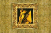

Эрих фон Дэникен. Колесницы богов

Лет пятнадцать назад этот фильм произвел сенсацию. На документальную ленту “Воспоминание о будущем” выстраивались километровые очереди. Его автор, немецкий исследователь Эрих фон Дэникен, потряс воображение зрителя своей смелой и дерзкой гипотезой – в незапамятные времена на Земле были космонавты древности, палеоастронавты. Он приводил яркие и красочные доказательства, предлагая подумать над ними, он расшатывал заскорузлые стереотипы мышления, задавая сакраментальный вопрос: а почему бы и нет?
С тех пор имя Эриха фон Дэникена многократно дезавуировалось, побивалось камнями и поливалось грязью. Его обвиняли в прямой подтасовке фактов, в легкомыслии и легковерии. Но как ни странно, ни одному читателю в нашей стране не довелось лично познакомиться с системой доказательств фон Дэникена, и данная публикация – первая попытка заполнить это “белое пятно” в наших знаниях о прошлом Земли.
Со дня выхода книги прошло немало лет, и они принесли новые открытия, о которых, возможно, современный читатель уже осведомлен; кое-что уточнилось, кое-что можно отвергнуть.
Но и сегодня теория Эриха фон Дэникена привлекает своей безудержной смелостью, броскостью мысли и романтизмом.
Вступление.
Есть ли в космосе разумные существа?.
Когда приземлился наш космический корабль?.
Невероятный и еще не объясненный мир.
Как это могло произойти?.
Были ли боги астронавтами?.
Огненные колесницы с небес.
Древние фантазии и легенды или древние факты?.
Древние чудеса или центр космических путешествий?.
Остров Пасхи – Земля Людей-Птиц.
Тайны Южной Америки и другие странности.
Земля и космический опыт.
Поиски прямых контактов.
Заключение.
Есть ли в космосе разумные существа?.
Когда приземлился наш космический корабль?.
Невероятный и еще не объясненный мир.
Как это могло произойти?.
Были ли боги астронавтами?.
Огненные колесницы с небес.
Древние фантазии и легенды или древние факты?.
Древние чудеса или центр космических путешествий?.
Остров Пасхи – Земля Людей-Птиц.
Тайны Южной Америки и другие странности.
Земля и космический опыт.
Поиски прямых контактов.
Заключение.